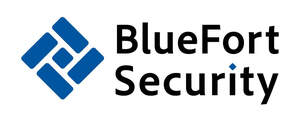

Trade Mark Journal No.2025/034 22 August 2025
UK00004248869 13 August 2025 (9,37,41,42)
Mark 1

Mark 2
Mark 3
- Class 9
- Computer networks; Computer network server; Computer network hardware; Computer network routers; Computer network adapters; Computer network hubs; Computer network switches; LAN [local area network] computer cards for connecting portable computer devices to computer networks; Computer network bridges; Computer software for accessing computer networks; Computer software for use in computer network access control; Computer software for wireless network communications; Computer programs for connecting remotely to computers or computer networks; Network management computer software; Computer programs for network management; Communication software for connecting computer network users; Computer software downloadable from global computer networks; Computer game software downloadable from a global computer network; Computer software for testing vulnerability in computers and computer networks; Downloadable computer game software via a global computer network and wireless devices; Communication software for connecting global computer networks; Computer software for the detection of threats to computer networks; Computer software to enable browsing on global computer networks; Computer programs for searching remotely for content on computers and computer networks; Computer software for communication between computers over a local network; Computer software downloadable from global computer information networks; Computer programs for searching the contents of computers and computer networks by remote control; Software for accessing information on a global computer network; Computer software for use in providing multiple user access to a global computer information network; Computer software for use in migrating between different computer network operating systems; Computer networking hardware; LAN [local area network] access points for connecting network computer users; Computer software for the monitoring of computer systems; Computer software for use in computer access control; Computer servers; Software for network and device security; Computer software for administration of local area networks; Network access server operating software; Computer systems; Computers and computer hardware; Mesh network software; Computer e-commerce software to allow users to perform electronic business transactions via a global computer network; Communications servers [computer hardware]; Computer hardware for telecommunications; Computer cabling; Computer modems; Wireless computer peripherals; Computer networking and data communications equipment; Computer software; Computer firewall software; Computer programmes for use in telecommunications; Network access server hardware; Computer software to maintain and operate computer system; Computer databases; Interface network modems; Computer interfaces; Network servers; Computer software for inter-network accounting in the telecommunications field; Computer terminals; Computer telephony software; Computer interface software; Computer software for monitoring the use of computers and the internet by children; Computer programming software; Operating computer software for main frame computers; Security software; Utility, security and cryptography software; Security tokens [encryption devices]; Software for ensuring the security of electronic mail; Software to control building environmental, access and security systems; Downloadable computer security software; Security token hardware for user authentication; Holographic security apparatus; Security warning apparatus; Security control apparatus; Privacy protection software; Access security apparatus (Electric -); Computer software for the remote control of security apparatus; Computer hardware; Hardware (Computer -); Computer diskettes; Computer printer; Computer peripherals; Tablet computer; Computer mainframes; Computer gaming software; Computer graphics software; Computer keyboards; Computer printers; Computer monitors; Computer programs for video and computer games; Computer software for computer aided software engineering; Computer whiteboard software; Computer screens; Computer programs; Computer mouses; Computer motherboards; Computer mouse; Computer disks; Computer application software for use with wearable computer devices; Computer antivirus software; Computer software adapted for use in the operation of computers; Computer whiteboards; Computer games software; Computer utility programs for computer maintenance; Monitors [computer hardware]; Computer joysticks; Computer games; Computer game software; Computer operating software; Computer shareware; Laptop computers; Computer software for education; Computer touchscreens; Computer software programs; Interactive computer software; Computer software downloaded from the internet; Computer groupware; Computer firmware; Computer keypads; Computer software for encryption; Computer mousepads; Computer software for communicating with users of hand-held computers; Educational computer software; Computer memory hardware; Computer software for entertainment; Computer application software for TV; Computer cables; Recorded computer software; Computer software, recorded; Software (Computer -), recorded; Computer screen saver software; Microchips [computer hardware]; Computer software [programmes]; Computer software for use in programming facsimile machines; Computer software supplied from the Internet; Computer keyboard controllers; Computer software for audibly controlling a computer and the operation thereof; Computer tapes; Controlling software for computer printers; Computer software applications; Computer plotters; Computer software for advertising; Software; Software reliability software; Application software for cloud computing services; Software testing software; Maintenance software; Computer software used for providing search engine services; Enterprise software; Communications software; Business application software; Business software; Business technology software; Telecommunications software; System software; Communication software; Collaboration software platforms [software]; Computer software for wireless content delivery; Network management software; Payment software; Communications server software; Business management software; Computer software programs for database management; Community software; Product engineering software; Computer software for system cleaning and optimization; Application software; System support software; Data buffers; Data processing programs recorded on machine-readable data carriers; Data networks; Data loggers; Data processors; Data terminals; Data processing software; Data transmitters; Data cables; Data cards; Data retrieving devices; Data switches; Data carriers; Data processing systems; Data communications software; Data storage programs; Data storage devices; Data mining software; Data processing programs; Data banks; Data encryption apparatus; Data engines; Data synchronization cables; Data wires; Computers for use in data management; Data storage media; Data cartridges; Data transmission networks; Data compression software; Data processing equipment; Data communications hardware; Data collection apparatus; Data storage apparatus; Apparatus for data storage; Data processing terminals; Real-time data processing apparatus; Data and file management and database software; Data suits; Software for the analysis of business data; Data communications apparatus; Data processing apparatus; Apparatus for the processing of data; Apparatus for data processing; Data management software; Apparatus for the transmission of data; Data transmission apparatus; Data storage discs; Optical data links; Data capture apparatus; Recorded data [magnetic]; Data gloves; Data encoding apparatus; Data loggers and recorders; AI software; LAN computer cards; LAN access points; Computer-aided engineering [CAE] software; Artificial intelligence software; Artificial intelligence apparatus; Artificial intelligence software for surveillance; Artificial intelligence software for analysis; Artificial intelligence software for healthcare; Artificial intelligence software for vehicles; Humanoid robots with artificial intelligence for use in scientific research; Artificial intelligence and machine learning software; Humanoid robots with artificial intelligence for preparing beverages; Artificial intelligence software for driverless cars; Interactive software based on artificial intelligence; Software for the integration of artificial intelligence and machine learning in the field of Big Data; Humanoid robots with artificial intelligence for use in household cleaning and laundry; Speech analytics software; Big data management software; Computer software to automate data warehousing; Intelligent gateways for real-time data analysis; Digital dashboard software; Enterprise content management [ECM] software; Software for the planning, integration and optimization of Smart City applications; Downloadable mobile applications for the management of data; Software for the planning, integration and optimisation of smart city applications; Search marketing software; Machine learning software for analysis; Business intelligence software; Dashboard software; On-premise management software; Tools [software] for search engine optimisation; Business performance management [BPM] software; Web content management [WCM] software; Digital solutions provider [DSP] software; Computer software for the processing of positioning data; E-commerce software; Traffic management software; Intelligent gateways for data pre-processing; Collaboration management software platforms; Optimisation software; Cloud network monitoring software; Computer software for the dissemination of positioning data; Computer software for the collection of positioning data; Customer relation management [CRM] software; Downloadable computer software for the management of data; Training software; Enterprise application software [EAS]; Information retrieval software; Software for converting natural language into machine executable commands; Computer software for converting document images into electronic formats.
- Class 37
- Installation of computer networks; Installation and maintenance of hardware for computer networks and Internet access; Updating of computer networking and telecommunications hardware; Maintenance and repair of computer networks; Computer installation and repair; Computer installation services; Computer hardware (Installation, maintenance and repair of -); Installation, maintenance and repair of computer hardware; Installation of computer systems; Installation and repair of computer hardware; Installation of computer hardware.
- Class 41
- Programming [scheduling of programs] on a global computer network; Provision of training via a global computer network; Information relating to computer gaming entertainment provided online from a computer database or a global communication network; Game services provided on-line from a computer network; Game services provided online from a computer network; Games services provided via computer networks and global communication networks; Games services provided on-line from a computer network; Training of personnel to ensure maximum security protection; Training services concerned with the use of computer software; Training services relating to computer software; Education services relating to the application of computer software; Training services in the field of computer software development; Education services relating to computer software; Multimedia entertainment software publishing services; Tuition in data processing; Training; Education and training; Training courses; Training and instruction; Training services; Education and training consultancy; Organisation of training courses; Organisation of training seminars; Organisation of training; Advanced training; Practical training; Education, teaching and training; Providing of training; Providing training; Providing courses of training; Conducting training seminars; Training courses (Provision of -); Provision of training courses; Instructional and training services; Provision of training; Business training; Continuous training; Training in administration; Training and education services; Education and training services; Arranging of training courses; Workshops for training purposes; Provision of training and education; Provision of education and training; Computer training; Educational and training services; Computer education training; Arranging professional workshop and training courses; Computer training advisory services; Instruction in the installation of computers; Education information; Training services relating to the use of information technology; Education information services; Educational information services; Educational services relating to information technology.
- Class 42
- Computer network services; Computer network configuration services; Programming of operating software for computer networks and servers; Configuration of computer systems and networks; Configuration of computer networks by software; Computer network design for others; Providing software on a global computer network; Rental of operating software for computer networks and servers; Hosting the web sites of others on a computer server for a global computer network; Configuration of computer networks using software; Computer programming for the internet; Computer programming for telecommunications; Design and development of wireless computer networks; Computer and computer software rental; Development of computer based networks; Implementation of computer programs in networks; Integration of computer systems and networks; Computer programming of computer games; Design and development of operating software for computer networks and servers; Providing temporary use of non-downloadable computer software for shipment processing over computer networks, intranets and the internet; Providing temporary use of non-downloadable computer software for tracking freight over computer networks, intranets and the internet; Rental of computer hardware and computer software; Computer programming; Programming (Computer -); Rental of computer hardware and computer peripherals; Computer programming and maintenance of computer programs; Provision of security services for computer networks, computer access and computerised transactions; Computer rental and updating of computer software; Administration of user rights in computer networks; Computer firewall services; Rental of computers and computer software; Development of computer hardware for computer games; Computer security consultancy; Internet security consultancy; Authentication services for computer security; Data security services [firewalls]; Computer security threat analysis for protecting data; Consultancy in the field of computer security; Telecommunication network security consultancy; Data security consultancy; Data security services; Computer security services for protection against illegal network access; Computer security system monitoring services; Provision of computer security risk management programs; Professional consultancy relating to computer security; Consultancy in the field of security software; Monitoring of computer systems for security purposes; Maintenance of computer software relating to computer security and prevention of computer risks; Consultancy in the field of data security; Rental of Internet security programs; Computer programming services for electronic data security; Updating of computer software relating to computer security and prevention of computer risks; Computer security services in the nature of administering digital certificates; Programming of Internet security programs; Design and development of Internet security programs; Design and development of electronic data security systems; Research relating to security; IT security, protection and restoration; Computer virus protection services; Protection services (Computer virus -); Computer forensics; Computer programming of video and computer games; Time-sharing (Computer -); Computer engineering; Writing of computer software; Computer software engineering; Copying of computer software; Repair of computer software; Up-dating of computer software; Computer software research; Computer design; Renting computer software; Updating of computer software; Software (Updating of computer -); Computer software (Updating of -); Software (Rental of computer -); Computer software rental; Computer software (Rental of -); Rental of computer software; Configuration of computer software; Computer software design; Software design (Computer -); Computer software (Design of -); Design of computer software; Computer software installation; Computer software (Installation of -); Software as a service; Hosting services, software as a service, and rental of software; Software as a service [SAAS] services; Software as a service [SaaS]; Consulting services in the field of software as a service [SaaS]; Software as a service [SaaS] featuring software for machine learning; Software maintenance services; Services for maintenance of computer software; Computer software maintenance services; Platforms for gaming as software as a service [SaaS]; Software as a service [SaaS] featuring software for deep learning; Support and maintenance services for computer software; Computer software rental services; Software engineering services; Computer and software consultancy services; Computer software consultancy services; Software as a service [SaaS] featuring software platforms for electronic gaming; Computer software consulting services; Computer software design services; Services for the design of computer software; Software consulting services; Software development services; Application service provider (ASP) services, namely, hosting computer software applications of others; Services for the leasing of computer software; Software customisation services; Software as a service [SaaS] featuring computer software platforms for artificial intelligence; Computer software advisory services; Software consultancy services; Installation and maintenance services for software; Application service provider services; Software as a service [SaaS] featuring software platforms for graphic design; Computer software programming services; Software as a service [SaaS] featuring software for deep neural networks; Platforms for graphic design as software as a service [SaaS]; Services for updating computer software; Technical services for the downloading of software; Services for the writing of computer software; Computer software technical support services; Application service provider [ASP], namely, hosting computer software applications of others; Services for designing computer software; Consultancy services in relation to computer software; Software engineering services for data processing programs; Maintenance of software; Professional advisory services relating to computer software; Software engineering services for data processing; Application service provider [ASP] services; Platforms for artificial intelligence as software as a service [SaaS]; Calibration services relating to computer software; Installation of Access Control as a Service (ACaaS) software; Consulting services relating to computer software; Design services relating to computer software; Development services relating to computer software application solutions; Advisory services relating to computer software design; Advisory services relating to the use of computer software; Advisory services relating to computer software; Consultancy and information services relating to the design, programming and maintenance of computer software; Hosting of Access Control as a Service (ACaaS) servers and software; Maintenance of computer software; Computer software maintenance; Computer software (Maintenance of -); Services for the design of electronic data processing software; Rental and maintenance of computer software; Software as a service [SaaS] services featuring software for machine learning, deep learning and deep neural networks; Advisory services relating to the rental of computers or computer software; Advisory services relating to computer software used for printing; Information technology [IT] support services [troubleshooting of software]; Computer program maintenance services; Maintenance of software for communication systems; Consultation services relating to computer software; Advisory services relating to computer software used for publishing; Development and maintenance of computer database software; Technical support services relating to computer software and applications; Development and maintenance of computer software; Computer system integration services; Computer software installation and maintenance; Installation and maintenance of computer software; Installation of software; Software installation; Computer integration services; Advisory services relating to computer software used for graphics; Computer software consultancy; Consultancy (Computer software -); Consultancy and information services relating to computer software design; Advice and development services relating to computer software; Provision of on-line support services for computer program users; Research and consultancy services relating to computer software; Computer software integration; Development of computer software application solutions; Rental of software; Rental of application software; Design services for computer hardware; Computer hardware design services; Rental of database management software; Rental of computer software and programs; Programming of telecommunications software; Installation, maintenance and repair of software for computer systems; Installation and maintenance of database software; Rental of computer hardware and software; Computer software consulting; Design, maintenance, rental and updating of computer software; Electronic data storage and data back-up services; Decoding of data; Computer services for the analysis of data; Computerised data storage; Data encryption services; Technical data analysis; Data conversion of electronic information; Electronic data storage; Electronic storage of data; Recovery of computer data; Data decryption services; Data duplication and conversion services, data coding services; Temporary electronic storage of information and data; Hosting of computerized data, files, applications and information; Data conversion of computer program data or information [not physical conversion]; Research relating to data processing; Online data storage; Recovery of smartphone data; Data migration services; Data back-up services; Data recovery services; Technical data analysis services; Off-site data backup; Updating of software for data processing; Data storage via blockchain; Computerised data storage services; Data encryption and decoding services; Compression of data for electronic storage; Electronic data back-up; Artificial intelligence consultancy; Artificial intelligence as a service (AIAAS); Research in the field of artificial intelligence; Technology consultation in the field of artificial intelligence; Research in the field of artificial intelligence technology; Providing artificial intelligence computer programs on data networks; Data warehousing; Research in the field of data processing technology; Consulting in the field of cloud computing networks and applications; Cloud-based data protection services ; Computer programming services for data warehousing; Engineering services relating to data processing technology; Analytic laboratory services; Design services relating to data processing tools; Data mining; Programming of software for e-commerce platforms; Information technology consultancy; Research in measurement technology; Information technology consulting; User authentication services using technology for e-commerce transactions; Design and development of data processing software; Design services relating to data processing test tools; Consulting services in the field of cloud computing; Design services for data processing systems; Consultancy services relating to software used in the field of e-commerce; Information technology consulting services; Providing user authentication services using biometric hardware and software technology for e-commerce transactions; Computer and information technology consultancy services; Consultancy and information services in the field of information technology architecture and infrastructure; Information technology [IT] consulting services; Design and development of data retrieval software; Information technology [IT] consultancy; Development of systems for the processing of data; User authentication services using blockchain technology; Consultancy services for analysing information systems; Enterprise content management; Maintenance and repair of software; Computer disaster recovery planning; Disaster recovery services (Computer -); Disaster recovery services for computer systems; IT service management [ITSM]; Expert advice relating to technology; Expert opinion relating to technology; Expert consultancy services in connection with computing equipment; Expert reporting services relating to technology; Provision of expert reports relating to computing; Provision of expert appraisals relating to computing; Expert consultancy services in connection with computing networks; Technical advice and consultancy services in the field of information technology; Providing information, advice and consultancy services in the field of computer software; Professional consultancy relating to technology; Computer consultancy and advisory services; Professional consultancy relating to computer software; Professional consultancy services relating to computer programming; Professional consultancy relating to computers; IT consultancy, advisory and information services; Consultancy in the field of computer system analysis; Computer consulting services; Professional advisory services relating to computer hardware; Advice and consultancy in relation to computer networking applications; Professional advisory services relating to computers; Technical consultancy relating to the use of computer hardware; Technical advice relating to computers; Technical research relating to computers; Technical advice relating to operation of computers; Technical consultancy services relating to computer programming; Providing technical advice relating to computer hardware and software; Providing technical advice relating to computers; Technical advice and consultancy services in the field of telecommunications; Technical consultancy relating to the installation and maintenance of computer software; Technical consultancy relating to the application and use of computer software; Technical consultancy services relating to information technology; Technical advisory services relating to computer programs; Technical project studies in the field of computer hardware and software; Provision of technical information in relation to computers; Technical services for the downloading of digital data; Provision of technical support in the operation of computing networks; Installation of firmware; Installation and maintenance of computer programs; Installation, repair and maintenance of computer software; Installation, maintenance and repair of computer software; Installation of database software; Installation, maintenance, repair and servicing of computer software; Installation, maintenance and updating of computer software; Installation, updating and maintenance of computer software; Installation of computer software; Information services relating to information technology; Issuing of information relating to information technology; Consultancy and information services relating to information technology; Provision of information relating to information technology; Providing information in the field of information technology; Consultancy and information services in the field of information technology; Compilation of information relating to information technology; Compilation of information relating to information systems; Consultancy and information services relating to information technology architecture and infrastructure; Information technology services; Information services relating to computers; Advisory and information services relating to computer software; Information technology support services; Information services relating to the application of computer networks; Information services relating to the application of computer systems; Services for the provision of technological information; Information services relating to the development of computer systems; Encryption, decryption and authentication of information, messages and data; Quality control relating to computer systems; Quality control relating to computer software; Conversion of computer programs and data, other than physical conversion; Conversion of data and computer programs (except physical conversion); Data conversion of computer programs and data [not physical conversion]; Conversion of texts to digital format; Computer code conversion for others; Development of software for data and multimedia content conversion from and to different protocols; Installation and actualisation of programs for data processing; Creating, maintaining, and updating computer software; Updating of software; Updating and upgrading of computer software; Creation, updating and adapting of computer programs; Developing and updating computer software; Installation, maintenance, updating and upgrading of computer software; Consultancy relating to the updating of software; Updating of software databases; Installation, maintenance and updating of database software; Creating, maintaining, and modernizing computer software; Maintenance and updating of computer software; Updating and maintenance of computer software; Maintenance of and updating of computer software; Writing and updating computer software; Updating of software data bases; Development, updating and maintenance of software and database systems; Repair (maintenance, updating) of software; Repair of software [maintenance, updating]; Updating of computer programs; Updating of software for embedded devices; Services for the updating of computer programmes; Design, maintenance, development and updating of computer software; Updating and maintenance of computer software and programs; Computer program updating services; Updating and design of computer software; Updating of computer programs for third parties.
BlueFort Security Limited